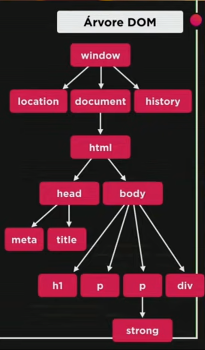

Tipos primitivos:
- Number...(números em geral)
- String......(Qualquer caractér entre parentesis)
- Boolean...(True or False)
- Object
- Function
Operadores
Aritméticos:
- + (adição)
- - (subtração)
- * (multiplicação)
- / (divisão)
- % (resto da divisão)
- ** (potenciação)
DOM
O DOM é a abreviação de Document Object Model.
Serve para podermos navegar entre as tags html com javascript com muita facilidade!
Nesta imagem, podemos ver um exemplo de como ficaria a Arvore DOM de um site simples...

As nomenclaturas delas em relação as outras, são 'child' e 'parents', sendo as debaixo e as de cima respectivamente.